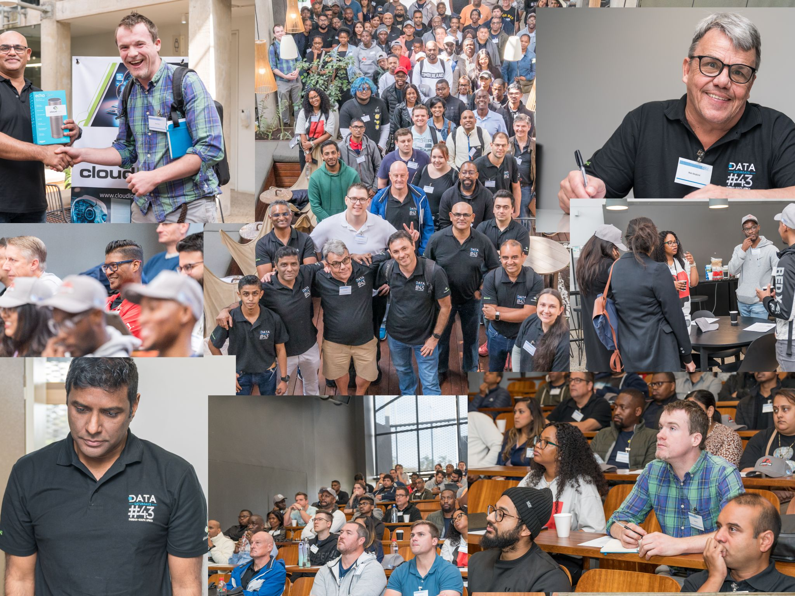

The Azure, AI/ML & Data Community Durban has the pleasure of bringing you: Data and AI Community Day Durban: Season of AI as a follow-up event to the extremely succesful Data & AI Community Day Durban: April:

Figure 1: Data & AI Community Day Durban: April 2024
The Data & AI Community Day was held on April 27, 2024, at the stunning offices of BETSoftware in Umhlanga. Over 175 attendees attended, a record for a free Data and AI community event in Durban! The event was a tremendous success, with a fantastic lineup of speakers, engaging presentations, and a great atmosphere. Attendee feedback was overwhelmingly positive, with many expressing their excitement for future events. We can’t wait to see you: Data and AI Community Day Durban: Season of AI.
So, what is Data and AI Community Day Durban: Season of AI? Microsoft recently introduced Microsoft Community Pilot. This initiative sees Microsoft supply slides and supporting demos to help anyone in the community quickly deliver a talk around topics important to Microsoft. The content is created by Microsoft but is free to reuse and remix to deliver to local user groups, meetups, and community events. As Microsoft intensifies its focus on AI, it is natural that AI would be the first topic for this initiative, hence Season of AI.
The Data and AI Community Day Durban: Season of AI is a dynamic, full-day, FREE, in-person event taking place on July 20, 2024 (location TBD). It promises an exciting, in-depth exploration of artificial intelligence and other hot topics in the realm of Data and AI.
Yes, there will be many AI topics. Still, the event wouldn’t be organized by Azure, AI/ML & Data Community Durban if we didn’t have a mix of other cool topics. So, expect topics along the lines of:
- Azure AI & ML Services (obviously)
- Generative AI
- Database Development
- Data Science & Analytics
- Real-world AI & Data Use Cases
- Streaming, Stream processing, Streaming databases
- Power Platform & Power Apps
Even though Season of AI is a Microsoft initiative, there will be topics covering non-Microsoft tech as well. The event will feature a mix of 60-minute and 20-minute sessions, with speakers from a diverse panel of experts, architects, and Microsoft Most Valuable Professionals (MVPs) who are all at the forefront of their fields.
So, whether you’re interested in Azure Open AI, eager to explore the latest in Generative AI, passionate about database development, fascinated by machine learning, or interested in the world of streaming, there’s something for everyone. Our expert speakers are ready to share their insights and experiences, providing you with the knowledge and inspiration to propel your projects and career forward. This event is a MUST-ATTEND! 📈🤖
Click on respective link for more information:
Registration
The registration for the event has not yet opened. We will update this page as soon as the registration opens. We are expecting a large turnout for this event, so we encourage you to register as soon as possible once the registration opens. The event is free, but space is limited, so don’t miss out!
Speakers
Call for Speakers (CfS) for the event is open. We are looking for speakers who are passionate about AI, ML, Data, and related topics and who are excited to share their knowledge and experiences with the community:
Expect to see thought leaders in their respective fields, Microsoft MVPs, Software Architects, etc.
We also want to showcase local talent, so please get in touch with us if you are interested in speaking.
Agenda
The agenda will appear here as soon as it is confirmed. As mentioned above, the event is a full-day event, and in addition to awesome presentations, it will allow you to network with your peers.
Venue
The venue for the event has yet to be confirmed. We are looking at a venue that can accommodate a large number of attendees and has ample parking. We will update this page as soon as the venue is confirmed.
Sponsors
We are excited to announce the upcoming Data and AI Community Day Durban: Season of AI. If recent events are any indication, this event promises to be a memorable and impactful experience for our community.

Figure 2: Data Saturday Durban 2023
As organizers, we seek sponsors who share our commitment to supporting our community and would like to participate in this exciting event.
Your sponsorship would not only help us make this event a reality but also showcase your company’s dedication to our community. We have various sponsorship packages available to suit different budgets and marketing goals.
By partnering with us, you can promote your brand to a diverse audience, gain exposure through our marketing efforts, and align your company with a positive community initiative.
If you want to learn more about our event and the sponsorship opportunities available, please don’t hesitate to reach out to us. We would be happy to provide you with a detailed sponsorship proposal and discuss how your support can make a meaningful impact.